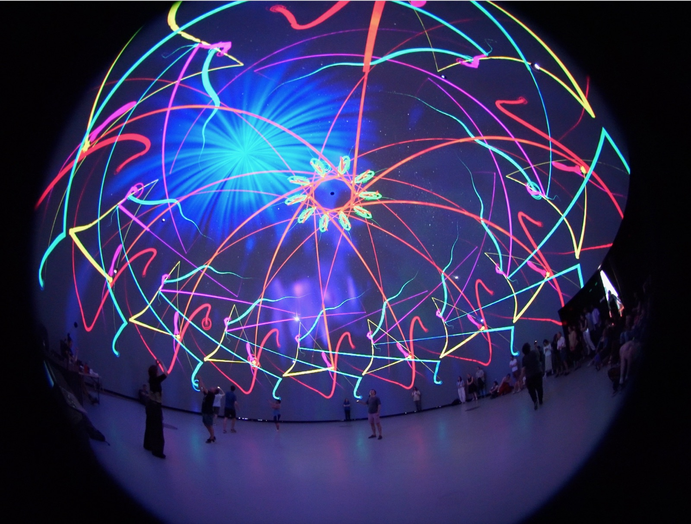
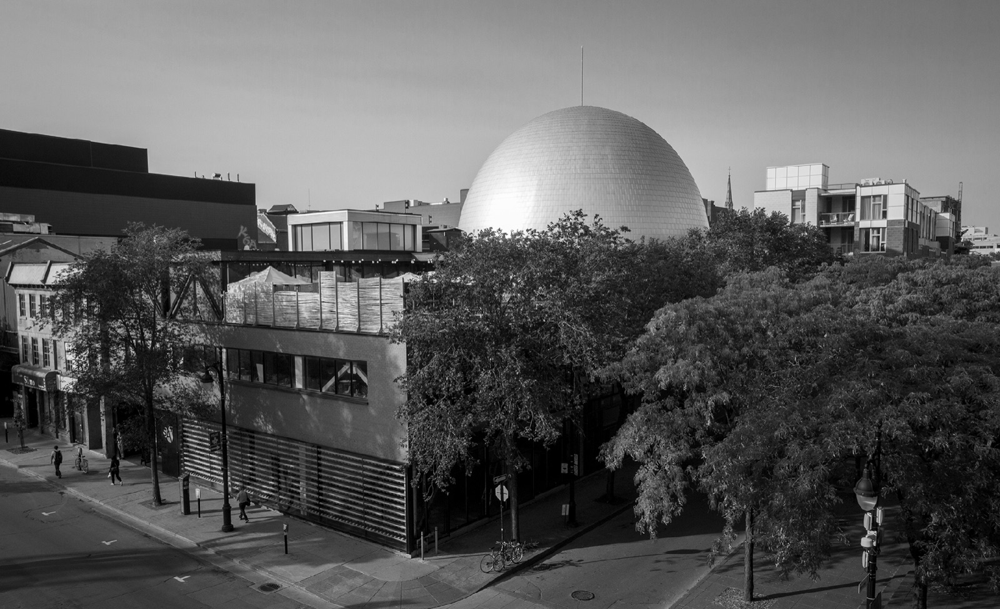
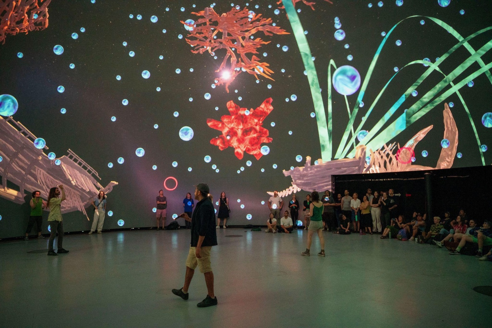
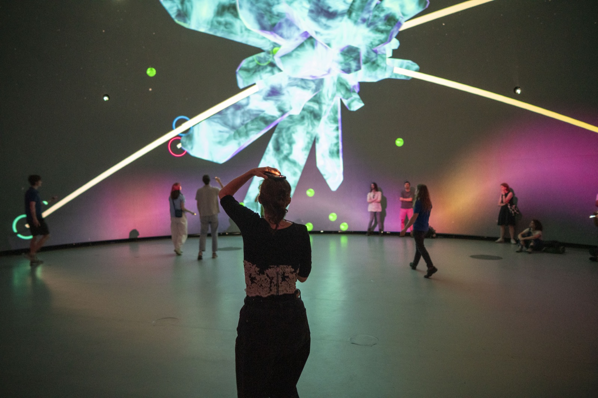
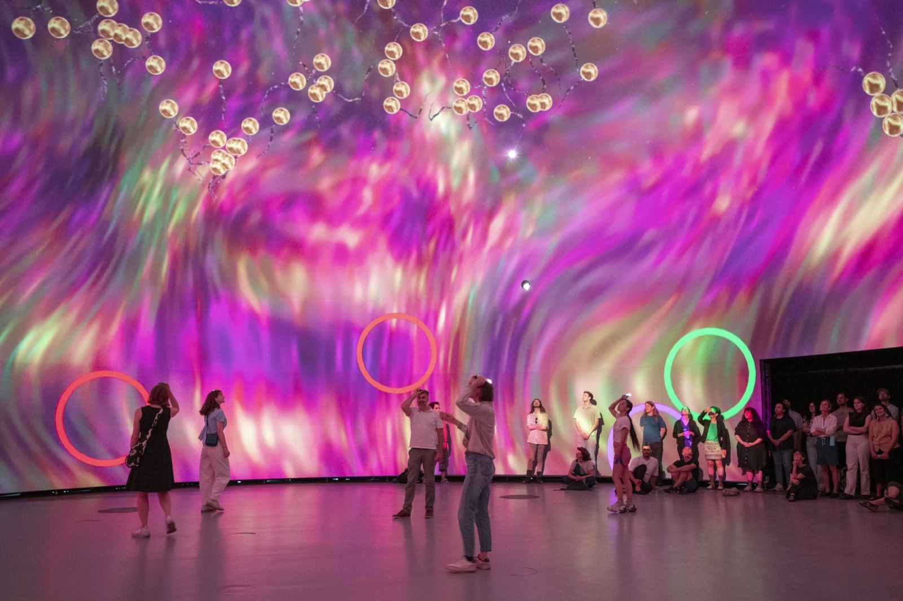
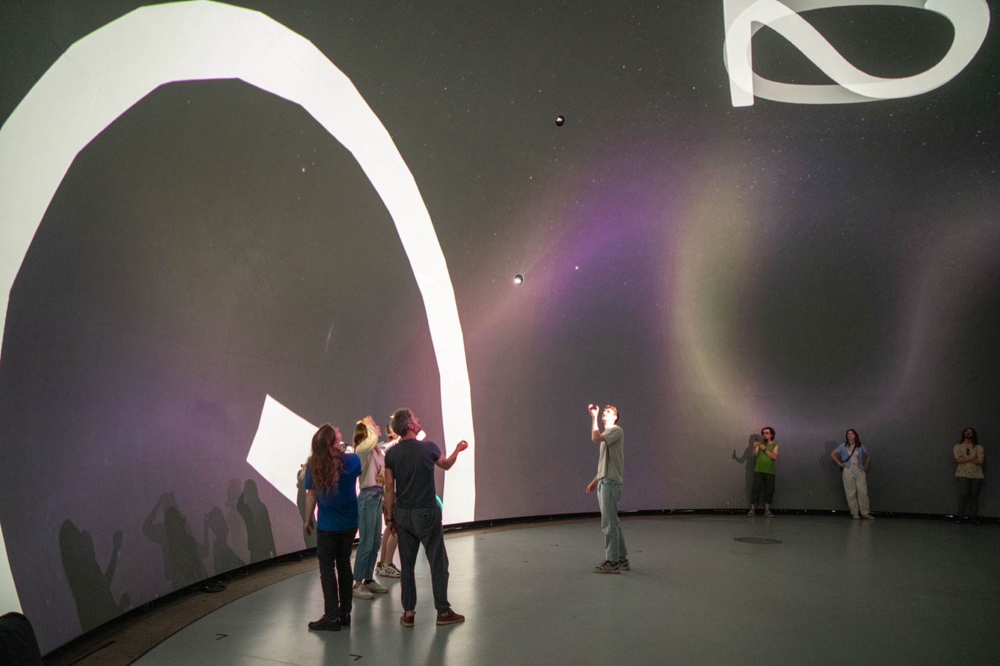
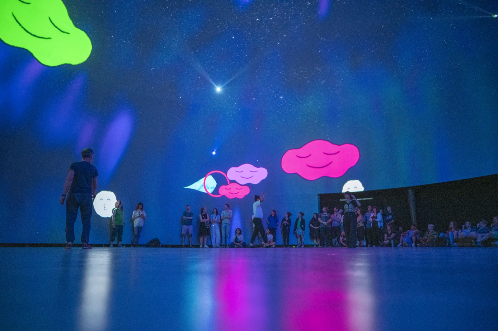
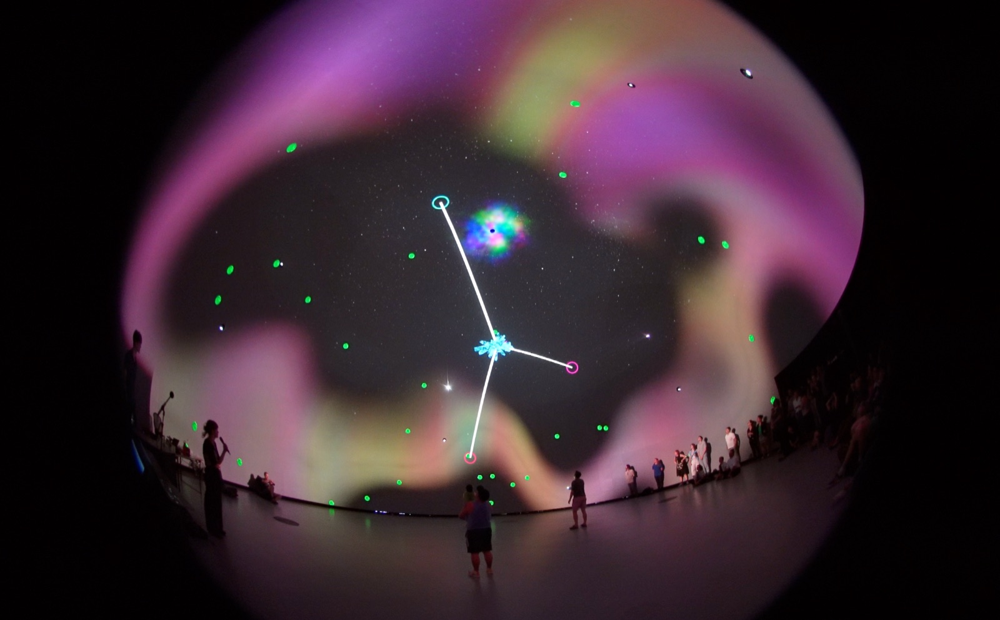

DO-EMS

DO-EMS, c'est une série de dix jeux-poèmes coopératifs pour le dôme. De tout petits jeux qu'on joue ensemble, avec tout son corps, dans la Satosphère, un immense dôme à la Société des arts technologiques (SAT), à Montréal. C'est une recherche en cours sur le contrôle partagé et le jeu coopératif.
Il n'y a pas de manette : c'est ton corps qui joue. Tu bouges dans le dôme, une caméra te suit, et tu contrôles un personnage projeté au-dessus de toi, avec les autres.
Faire pour le dôme
La Satosphère, c'est un dôme de 13 mètres de diamètre, avec 8 projecteurs et 93 haut-parleurs, qui peut accueillir 350 personnes. Pour l'instant, je garde les jeux petits, autour d'une dizaine de personnes à la fois, le temps de la recherche.
Quand je travaille avec une technologie, ça compte pour moi de faire pour cette technologie-là. Alors, qu'est-ce qu'un dôme a d'unique? Contrairement aux écrans, bordés de lignes dures, un dôme n'a qu'un seul bord : le sol. Il n'y a pas de hors-scène, pas de « derrière », un peu comme en VR. Mais contrairement à la VR, un dôme est une bulle à un seul bord, un vaisseau qu'on occupe ensemble. Faire pour le dôme, c'est faire pour une bulle partagée, un espace magique qu'on habite ensemble.

Les jeux
Voici les DO-EMS, de petits jeux-poèmes pour le dôme.
Kali. On danse dans le dôme, et nos corps peignent un kaléidoscope sur tout le ciel. Le mouvement de chaque personne est répété tout autour du dôme, si bien que quelques corps font éclore un seul immense motif qui tourne. Plus on bouge, plus il devient complexe. La trame sonore est signée Jónsi, de Sigur Rós.
Steer. Le dôme au complet devient un vaisseau qu'on pilote ensemble. Pas de volant : pour aller quelque part, le groupe se rassemble sur ce bord-là du dôme, et il vire dans cette direction, comme un vaisseau spatial. On vote avec nos corps, et on avance ensemble dans une histoire dont on choisit le chemin.


Share. On contrôle un seul cristal ensemble, et il se tient toujours au point exact entre nous tous·tes. Alors la seule façon de le déplacer, c'est de bouger ensemble : tirez chacun·e de votre côté, et il reste simplement là, entre nous. En bougeant comme un seul corps, on le nourrit de points pour le faire grossir et on l'éloigne des pointes.
Flock. Une volée de petites créatures dérive dans le dôme, craintive : approche-toi et elles se dispersent, recule et elles reviennent vers toi. Ensemble, on pousse toute la volée vers un portail au sommet du dôme, où elles passent et reviennent transformées.

Stick Together. Un cercle se déplace à travers le dôme, et on doit avancer avec lui, en gardant la majorité du groupe à l'intérieur pendant qu'il bouge. Dès que la plupart d'entre nous sont dedans, tout s'anime : la musique démarre et le temps se met à compter. Ça commence doucement, puis ça accélère, et rester ensemble devient de plus en plus difficile. Un jeu de destin partagé.

With Me. On dérive dans le dôme en mangeant des points, et on grossit, encore et encore. Puis on se rentre dedans, et tout ce qu'on a amassé se répand pour reconstruire le monde.
Hug. Des nuages flottent sur le dôme, chacun cachant un visage. On les retourne pour trouver les visages tristes ; quand deux visages tristes se révèlent en même temps, de longs bras se tendent à travers le dôme, les nuages s'enlacent et montent, heureux, vers le sommet. Le dôme est si grand que personne n'y arrive seul·e. Les illustrations sont de Pen Ward.

Constellation. Une constellation apparaît sur le dôme, et chacun·e aligne son corps avec l'une de ses étoiles. La forme ne se complète que lorsqu'on est tous·tes en place en même temps, et elle s'illumine. Reproduisez-la avant la fin du compte à rebours, et une nouvelle, plus difficile, apparaît. Chaque personne est une étoile : impossible tout·e seul·e.

Le corps comme manette
Tous ces jeux se jouent uniquement avec le corps, lu par une seule caméra que j'installe au sommet du dôme.
J'aime le corps comme manette parce que j'adore cette liberté-là : on bouge, et des choses arrivent. Du jeu incarné. Et parce que j'aime faire des jeux pour les gens qui ne se considèrent pas comme des joueur·euses.
Merci
Un merci immense aux personnes qui ont donné vie à ce projet : Cabbibo, Isaac, Pen Ward, Manu, Jules, et nos consultant·es Pierre, Céline, Julia et Alexis. À l'équipe formidable de la SAT : Marek, Kristophe, Bruno, Mourad, Hugo, Zack et l'autre Zack, Pablo, OSSIA et Jean-Michaël. À nos testeur·euses : Julia, Lee, Tricia, Don, Libby, Kousu, Isa et Emma. Et à Fili Gibbons pour la musique et les sons, ainsi qu'à Kristian North, Jónsi et Alex Somers pour la musique. Créé à la Société des arts technologiques (SAT), à Montréal. Photos : SAT.